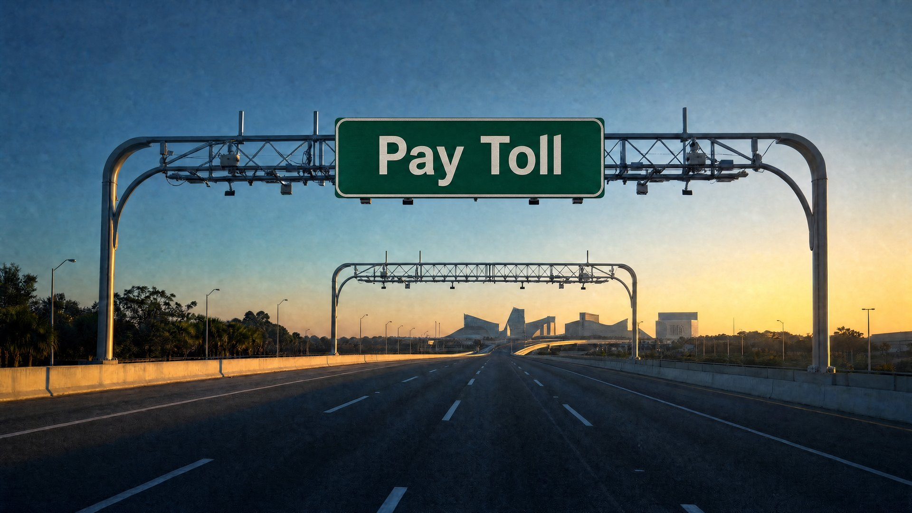

When Can a Lawyer Help With Florida Toll Violations?
Two requirements must be met before calling Lotter Law
| By Jeff Lotter, Esq.

If you are thinking about calling Lotter Law over unpaid tolls, look at the documents in front of you first. Our firm generally cannot help unless the tolls have become Uniform Traffic Citations and the citations' initial 30-day payment period has expired.
The two requirements
- The unpaid tolls have been converted into Uniform Traffic Citations, commonly called UTCs.
- The initial 30-day payment period printed on those citations has expired.
If either answer is no, the matter is still between you and the toll authority. The practical advice is simple: pay them what they want.
That may not be the answer you hoped to hear, but resolving legitimate toll charges directly is usually the least expensive option. Do not intentionally allow a toll matter to become a court case because you assume hiring a lawyer later will produce a better deal.
What Lotter Law Cannot Help With
We generally cannot help when you have only received:
- A Pay By Plate invoice
- An unpaid toll notice
- A past-due invoice
- A registration hold based only on unpaid tolls
- A UTC that is still within its initial 30-day agency payment period
At those stages, the toll authority still controls the resolution process. A lawyer cannot ordinarily take an invoice into traffic court before it has become a court matter. Call the toll authority, review the charges, and use its dispute process if you believe the vehicle, plate, account, or toll is wrong. If the amount is legitimate, pay it before the deadline.
The Central Florida Expressway Authority says customers can address invoices and qualifying UTCs through CFX during the applicable payment period. CFX also states that it loses authority to resolve a UTC after the first 30 days, when the citation is filed with the clerk of court. That agency guidance is important for Central Florida drivers, but procedures can vary by issuing authority.
First Threshold: The Toll Must Become a Uniform Traffic Citation
An invoice from a toll authority is not necessarily a court case. Florida law allows a toll-enforcement officer to issue and mail a Uniform Traffic Citation to the vehicle's registered owner. The UTC is the formal traffic citation. You can read the governing provision in Florida Statute 316.1001.
Look for these items on the document
- The words Uniform Traffic Citation or UTC
- A citation number
- An issuance date
- Instructions describing payment or court-hearing options
If you have only an invoice or unpaid-toll notice, you have not crossed this threshold. Contact the issuing toll authority rather than a law firm.
Second Threshold: The Initial 30-Day Payment Period Must Expire
Receiving a UTC does not immediately mean that hiring an attorney is your best option. Under Florida Statute 318.14(12), a person cited for a toll violation may pay the toll authority's fine plus the unpaid toll within 30 days after the UTC's issuance.
If that initial option is not used, the statute provides an additional 45 days after the citation's issuance to request a court hearing or pay the applicable civil penalty and delinquent fee. For CFX citations, the agency says a UTC unresolved after the first 30 days is filed with the clerk in the county where the vehicle is registered. CFX can no longer resolve it at that point.
That is when Lotter Law may be able to help: you have a UTC, its initial agency-resolution period has expired, and the citation has entered the clerk and court process. Our guide to what happens in Florida traffic court explains the broader hearing process.
Paying Early Is Usually the Better Result
Court involvement is not an upgrade. It can mean court costs, delinquent fees, multiple pending citations, time dealing with the clerk, and possible driver-license consequences if later court obligations are ignored.
Florida law authorizes license-suspension procedures when a person fails to comply with traffic-citation obligations or fails to appear. See Florida Statute 318.15. If you can resolve the matter directly with the toll authority, do it. Paying early will ordinarily cost less than waiting for court costs to accumulate and then hiring a lawyer.
That may even justify obtaining a small, reasonably priced loan from a family member, bank, or credit union. I am not recommending a payday loan, title loan, or another high-cost product. Compare the real borrowing cost against the additional expense created by allowing multiple toll matters to reach court.
When Lotter Law May Be Able to Help
Consider contacting Lotter Law when all of the following are true:
- You have received actual Uniform Traffic Citations.
- More than 30 days have passed since the citations were issued.
- The toll authority can no longer resolve the citations.
- The citations have been filed, or are eligible to be addressed, with the clerk of court.
At that stage, we can review the citations, determine their status, and evaluate whether representation makes financial and practical sense. Representation is not automatically the right choice in every case. The number of citations, amounts claimed, deadlines, county, court status, and any license consequences all matter. Our broader article on how Florida toll violations escalate provides additional background.
Before Calling, Gather These Documents
Have the following available so we can determine whether the matter has reached the point where we can assist:
- Every UTC
- The issuance date printed on each UTC
- Any clerk notices or case numbers
- Any notice concerning your driver license or vehicle registration
- The name of the toll authority
- Records showing payments, vehicle ownership, a sale, theft, or incorrect license-plate information
Have You Crossed Both Thresholds?
If the tolls have become UTCs and the initial 30-day payment period has expired, Lotter Law can review whether the citations are now in the court system and whether representation makes sense.
Call (407) 500-7000 for a free consultation. If either threshold has not been crossed, contact the toll authority instead.
Official Sources
- F.S. 316.1001 — Payment of toll on toll facilities required; penalties
- F.S. 318.14(12) — Toll-citation payment and hearing periods
- F.S. 318.15 — Failure to comply or appear
- Central Florida Expressway Authority — Uniform Traffic Citation guidance
This article provides general information about Florida toll citations and is not legal advice for any individual case or situation. Procedures and deadlines can depend on the issuing toll authority, county, citation, and current court status.

Jeff Lotter
Criminal Defense Attorney | Former State Trooper
Jeff Lotter is an Orlando criminal defense and traffic attorney and former Florida law enforcement officer. He uses his courtroom and traffic-enforcement experience to help clients understand and address criminal and traffic charges.
Related Articles
How Florida Toll Violations Escalate
How a small unpaid toll can become a Uniform Traffic Citation and court matter.
What to Do With Multiple Toll Violations
The documents and practical issues that matter when several citations reach court together.
What to Expect at Your First Traffic-Court Hearing
A practical guide to appearances, pleas, evidence, and possible outcomes.
Should You Hire an Attorney for a Traffic Ticket?
When legal representation may—or may not—make financial and practical sense.